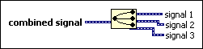

Split Signals Function
Owning Palette: Signal Manipulation Express VIs
Requires: Base Development System
Splits two or more signals into component signals. Resize the function to add outputs.
Each unit of the original signal contains the time information (t0 and dt) of the waveform. When LabVIEW splits the signal, each resulting signal retains the original information.
 Add to the block diagram Add to the block diagram |
 Find on the palette Find on the palette |